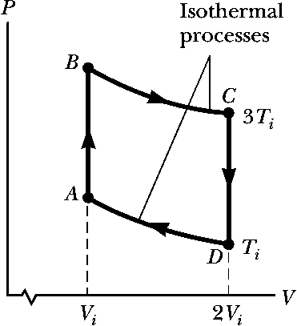

Homework F - Thermodynamics
Problem F.1
In a period of \(1.00 s\), \(5.00 \times 10^{23}\) nitrogen molecules strike a wall with an area of \(8.00~cm^2\) . Assume the molecules move with a speed of \(300~m/s\) and strike the wall head-on in elastic collisions. What is the pressure exerted on the wall? Note: The mass of one \(N_2\) molecule is \(4.65 \times 10^{-26}~kg\).
Problem F.2
A \(4.00~L\) sample of a diatomic ideal gas with specific heat ratio \(\gamma = 1.40\), confined to a cylinder, is carried through a closed cycle. The gas is initially at \(1.00~atm\) and \(300~K\). First, its pressure is tripled under constant volume. Then, it expands adiabatically to its original pressure. Finally, the gas is compressed isobarically to its original volume.
- Draw a PV diagram of this cycle.
- Determine the volume of the gas at the end of the adiabatic expansion.
- Find the temperature of the gas at the start of the adiabatic expansion.
- Find the temperature at the end of the cycle.
- What was the net work done on the gas for this cycle?
Problem F.3
An engine absorbs \(1.70~kJ\) from a hot reservoir at \(277^\circ C\) and expels \(1.20~kJ\) to a cold reservoir at \(27^\circ C\) in each cycle.
- What is the engine’s efficiency?
- How much work is done by the engine in each cycle?
- What is the power output of the engine if each cycle lasts \(0.300~ s\)?
Problem F.4
Suppose a heat engine is connected to two energy reservoirs, one a pool of molten aluminum (\(660^\circ C\)) and the other a block of solid mercury (\(238.9^\circ C\)). The engine runs by freezing \(1.00~g\) of aluminum and melting \(15.0~g\) of mercury during each cycle. The heat of fusion of aluminum is \(3.97 \times 10^5~ J/kg\); the heat of fusion of mercury is \(1.18 \times 10^4~ J/kg\). What is the efficiency of this engine?
Problem F.5
A \(1.00-mol\) sample of an ideal monatomic gas is taken through the cycle shown below. The process \(A \rightarrow B\) is a reversible isothermal expansion. Calculate
- the net work done by the gas
- the energy added to the gas by heat
- the energy exhausted from the gas by heat
- the efficiency of the cycle
- Explain how the efficiency compares with that of a Carnot engine operating between the same temperature extremes.
Problem F.6
In 1816, Robert Stirling, a Scottish clergyman, patented the Stirling engine, which has found a wide variety of applications ever since, including current use in solar energy collectors to transform sunlight into electricity. Fuel is burned externally to warm one of the engine’s two cylinders. A fixed quantity of inert gas moves cyclically between the cylinders, expanding in the hot one and contracting in the cold one. The below figure represents a model for its thermodynamic cycle. Consider \(n\) moles of an ideal monatomic gas being taken once through the cycle, consisting of two isothermal processes at temperatures \(3~T_i\) and \(T_i\) and two constant volume processes. Let us find the efficiency of this engine.
- Find the energy transferred by heat into the gas during the isovolumetric process AB.
- Find the energy transferred by heat into the gas during the isothermal process BC.
- Find the energy transferred by heat into the gas during the isovolumetric process CD.
- Find the energy transferred by heat into the gas during the isothermal process DA.
- Identify which of the results from parts (a) through (d) are positive and evaluate the energy input to the engine by heat.
- From the first law of thermodynamics, find the work done by the engine.
- From the results of parts (e) and (f), evaluate the efficiency of the engine.
A Stirling engine is easier to manufacture than an internal combustion engine or a turbine. It can run on burning garbage. It can run on the energy transferred by sunlight and produce no material exhaust. Stirling engines are not currently used in automobiles due to long startup times and poor acceleration response.
